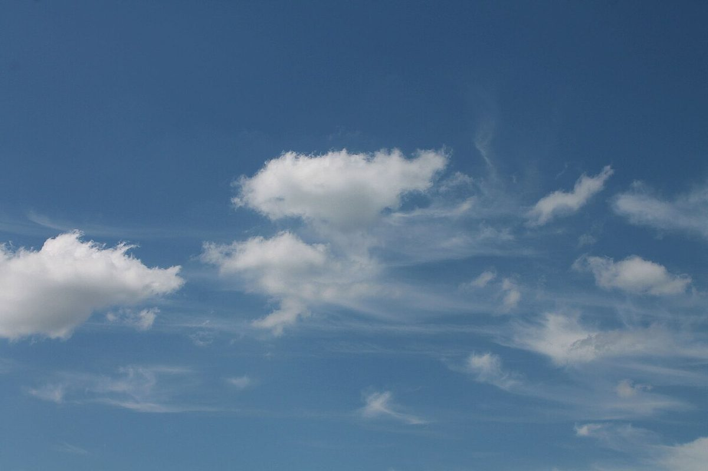
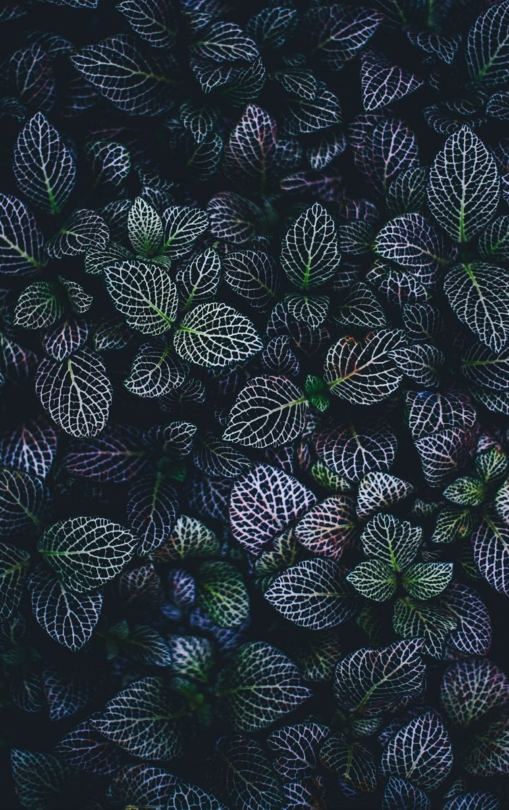

文欒
カフェ / 北海道旭川市
4+23=27
北海道旭川市にあるカフェ「文欒」のご案内ページです。営業時間やメニューなど詳しいことは準備中。まずはInstagramをのぞいてみてください。

制作側の連想
「文」の4画と「欒」の23画
屋号の由来や読み、込められた意味は分かりません。制作側は屋号の二文字を眺めて、一般的な数え方での画数が「文」は4画、「欒」は23画で、あわせて27になることに目がとまりました。そこでこのページは、上端に並ぶ27本の目盛り(最初の4本だけ色が違います)を物差しにして、少ない画から多い画へ、ひと画ずつ進むように作っています。これは制作側の連想で、お店の理念・由来とは無関係です。画数には別の数え方もあります。
空のうつろい(イメージ)
空をひと画ずつ
写真は旭川市の風景ではありません。国外・撮影地不明のフリー素材をイメージで選びました。



ご案内
お店のこと(確認できたものだけ)
| 所在地 | 北海道旭川市南6条通19丁目2182-103 |
|---|---|
| 電話 | なし |
| 営業時間 | 準備中 |
| 定休日 | 準備中 |
| ご予約 | 準備中 |
| 駐車場 | 準備中 |
| SNS | Instagram @cafebunran |